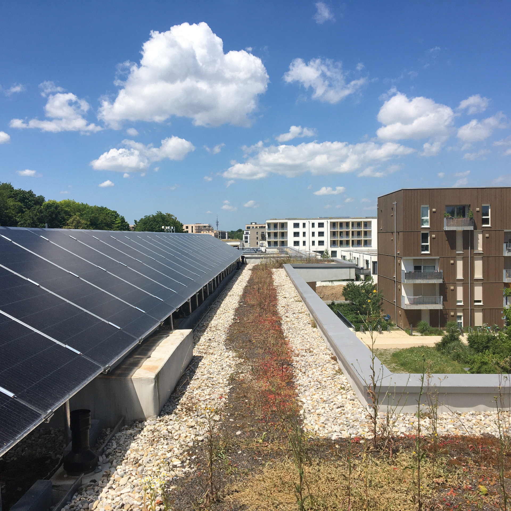
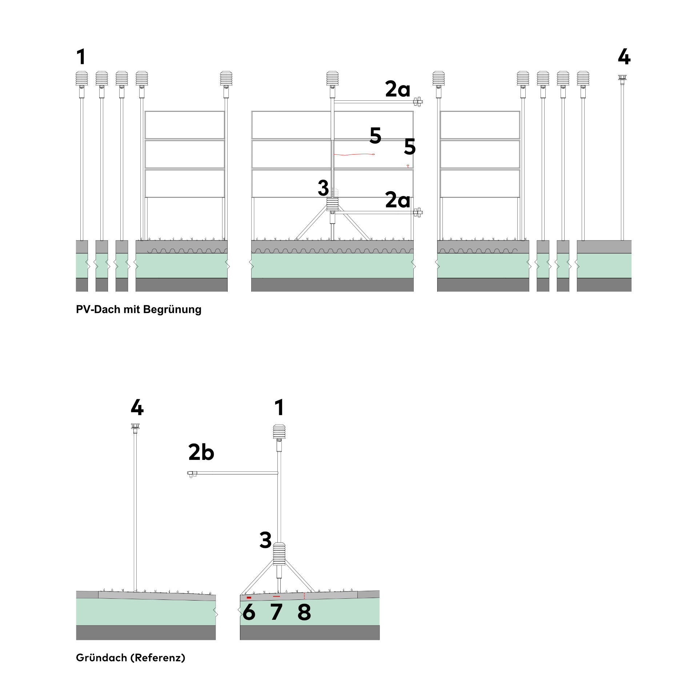
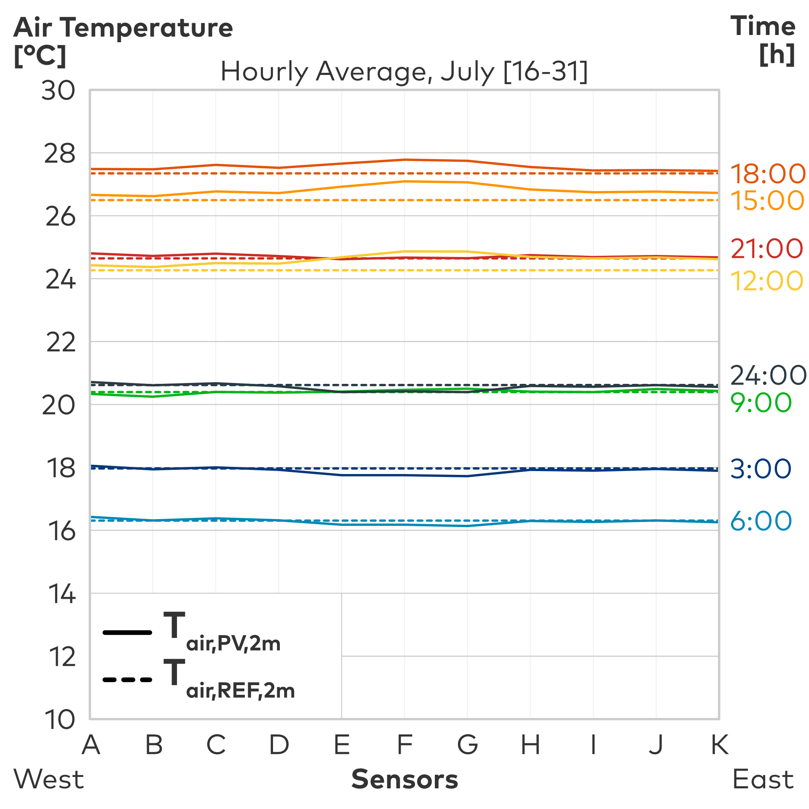

Cleanvelope
Forschungsprojekt (TUM) 2023
Energieaktive Gebäudehüllen als Baustein klimaorientierter Stadtentwicklung
⬤ Diese Studie der TU München aus 2023 untersucht thermische Auswirkungen von Dach-PV-Anlagen
auf das urbane Mikroklima. Messungen an zwei Gründächern in München zeigen tagsüber eine
moderate Lufttemperaturerwärmung um maximal 1,35 K und nachts Abkühlung um bis zu 1,19 K,
hauptsächlich durch erhöhten konvektiven Wärmeaustausch.
Das niedrigere Albedo der PV-Module
(0,11 vs. 0,15) führt zu intensiverer Langwellenstrahlung. Die Stromproduktion mit
Wirkungsgraden bis 19,5% reduziert Modultemperaturen deutlich – Vergleiche zeigen
Temperaturunterschiede bis 6 K zwischen aktivem und deaktiviertem Modul. Konvektive Wärmeflüsse
unter PV sind etwa doppelt so hoch wie bei Vegetationsflächen.
Unter der Installation
stabilisiert sich das Bodenklima durch Verschattung; Bodenfeuchte und Temperatur verbessern
sich. Die Ergebnisse bestätigen das Potenzial von Dach-PV für Klimaschutz mit minimal lokalen
Mikroklimaauswirkungen.
⬤ This study by the Technical University of Munich from 2023 examines the thermal effects of
rooftop PV systems on the urban microclimate. Measurements taken on two green roofs in Munich
show a moderate increase in air temperature of up to 1.35 K during the day and a cooling of up
to 1.19 K at night, mainly due to increased convective heat exchange.
The lower albedo of the PV
modules (0.11 vs. 0.15) leads to more intense long-wave radiation. Electricity production with
efficiency levels of up to 19.5% significantly reduces module temperatures – comparisons show
temperature differences of up to 6 K between active and inactive modules. Convective heat flows
under PV are about twice as high as on vegetated areas.
Under the installation, the soil climate
stabilizes due to shading; soil moisture and temperature improve. The results confirm the
potential of rooftop PV for climate protection with minimal local microclimate effects.
Dr.-Ing. C. Hemmerle